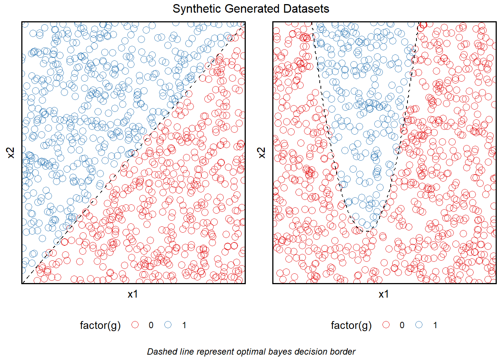
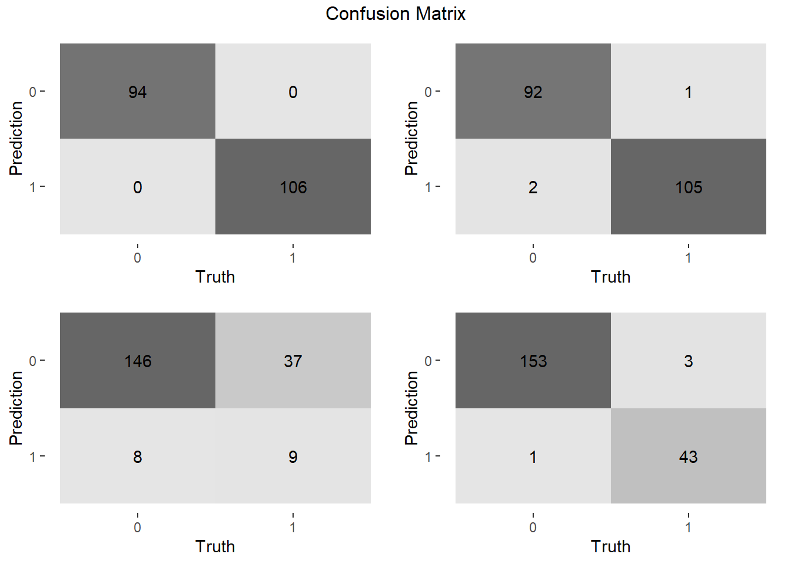

1 logistic vs knn
1.1 Dataset definition
When comparing a Logistic regression model agains a Nearest Neighbour model we are comparing a highly biased and a very flexible approach. While a logostic regression assumes a linear border between both classes, NN makes no assumptions and and relies on local information (by k neighbours) to predict a class.
Given the base assumption of a linear boundary by logistic regression, a model whose border differs, substantially from a line we expect will performe badly. On the other hand the lack of linearity won’t an issue for knn.
Therefore, we built two datasets with 1000 observations from a Uniform Distribution, one with a classification provided by a linear model of \(X1 >= X2\) and a narrow quadratic function \(abs(1,2 * X_{1} - 5)^2 + 2\).
decision_fun_linear <- function(x1, x2){
res <- ifelse(x2 >= x1, 1, 0)
return(res)
}
decision_fun_quadratic <- function(x1, x2){
res <- ifelse(x2 >= abs( (1.2 * x1 - 5)^2 + 2 ), 1, 0)
return(res)
}
dataset_linear <- dataset_gen_unif(class_fun = decision_fun_linear, size = 1000)## Warning: The `x` argument of `as_tibble.matrix()` must have unique column names if `.name_repair` is omitted as of tibble 2.0.0.
## Using compatibility `.name_repair`.
## This warning is displayed once every 8 hours.
## Call `lifecycle::last_lifecycle_warnings()` to see where this warning was generated.dataset_quadratic <- dataset_gen_unif(class_fun = decision_fun_quadratic, size = 1000)
grid.arrange(
dataset_linear$border_plot,
dataset_quadratic$border_plot,
nrow = 1,
top = "Synthetic Generated Datasets",
bottom = grid::textGrob(
"Dashed line represent optimal bayes decision border",
gp = grid::gpar(fontface = 3, fontsize = 9)
)
)
1.2 Model fitting
Each dataset was divided on training and test dataset using a 80/20 split.
# 0. Separate test and train
data_linear <- dataset_linear$dataset
data_linear$g <- factor(data_linear$g)
split <- initial_split(data_linear, prop = 0.8)
train_data_linear <- training(split)
test_data_linear <- testing(split)
data_quadratic <- dataset_quadratic$dataset
data_quadratic$g <- factor(data_quadratic$g)
split <- initial_split(data_quadratic, prop = 0.8)
train_data_quadratic <- training(split)
test_data_quadratic <- testing(split)1.2.1 Logistic regression
## Create workflow
### Logistic regression -------------------------
# 1. specify the model
logistic_reg_glm_spec <-
logistic_reg(mode = "classification") %>%
set_engine('glm', family = "binomial")
# 2. preprocessing
preprocess <-
recipe(g ~ x1 + x2 , data = train_data_linear)
# 3, Buildworkflow
logit_wflow <-
workflow() %>%
add_model(logistic_reg_glm_spec) %>%
add_recipe(preprocess)
# 4. Fit model
fit_control <- control_resamples(save_pred = TRUE, save_workflow = TRUE)
folds_linear <- vfold_cv(train_data_linear, v = 10)
folds_quadratic <- vfold_cv(train_data_quadratic, v = 10)
logit_metrics_linear <-
logit_wflow %>%
fit_resamples(folds_linear, verbose = TRUE, control = fit_control)## Warning: The `...` are not used in this function but one or more objects were passed: 'verbose'## ! Fold01: preprocessor 1/1, model 1/1: glm.fit: algorithm did not converge, glm.fit: fitted probabi...## ! Fold02: preprocessor 1/1, model 1/1: glm.fit: algorithm did not converge, glm.fit: fitted probabi...## ! Fold03: preprocessor 1/1, model 1/1: glm.fit: algorithm did not converge, glm.fit: fitted probabi...## ! Fold04: preprocessor 1/1, model 1/1: glm.fit: algorithm did not converge, glm.fit: fitted probabi...## ! Fold05: preprocessor 1/1, model 1/1: glm.fit: algorithm did not converge, glm.fit: fitted probabi...## ! Fold06: preprocessor 1/1, model 1/1: glm.fit: algorithm did not converge, glm.fit: fitted probabi...## ! Fold07: preprocessor 1/1, model 1/1: glm.fit: algorithm did not converge, glm.fit: fitted probabi...## ! Fold08: preprocessor 1/1, model 1/1: glm.fit: algorithm did not converge, glm.fit: fitted probabi...## ! Fold09: preprocessor 1/1, model 1/1: glm.fit: algorithm did not converge, glm.fit: fitted probabi...## ! Fold10: preprocessor 1/1, model 1/1: glm.fit: algorithm did not converge, glm.fit: fitted probabi...logit_metrics_quadratic <-
logit_wflow %>%
fit_resamples(folds_quadratic, verbose = TRUE, control = fit_control)## Warning: The `...` are not used in this function but one or more objects were passed: 'verbose'# 5. Performance metrics over the validation set
logit_metrics_linear <- collect_metrics(logit_metrics_linear, summarize = FALSE)
logit_metrics_quadratic <- collect_metrics(logit_metrics_quadratic, summarize = FALSE)
# 6. Fits final model
logit_linear_fit <-
logit_wflow %>%
fit(train_data_linear)## Warning: glm.fit: algorithm did not converge## Warning: glm.fit: fitted probabilities numerically 0 or 1 occurredlogit_linear_model <- extract_fit_parsnip(logit_linear_fit)
logit_quadratic_fit <-
logit_wflow %>%
fit(train_data_quadratic)
logit_quadratic_model <- extract_fit_parsnip(logit_quadratic_fit)1.3 Compare results
The plots below show the resulting decision bondaries
The plots shows the evolution of key metrics over crossvalidation trainning

The plots show the metrics between different models
1.4 Conclusion
Given is simplicity and explicit difference between each class, both model perform very well on a dataset with a clear linear bondary. That is visible on both the training and test dataset although with an edge towards the logistic regression.
It is when the boundary aliviates the linearity condition that knn really outshines the logistic output.
It is important to notice that given the fact that the data derive from such strong definitions, it lakes randomness and therefore it’s not easy to identify signs of overfitting.